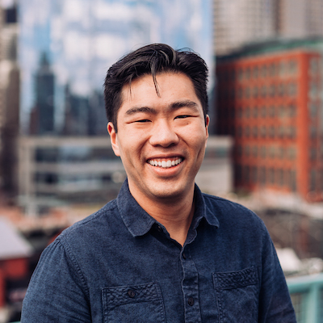

I'm an early-stage software investor at Base10 Partners in San Francisco.
Previously, I was with OpenView, a B2B SaaS-focused VC firm in Boston, and JMI Equity, an B2B software-focused growth equity firm in San Diego.
I graduated from The University of Virginia with a degree in economics.
Outside of work, I have an outrageous obsession with electronic music and cooking, both together and separate.